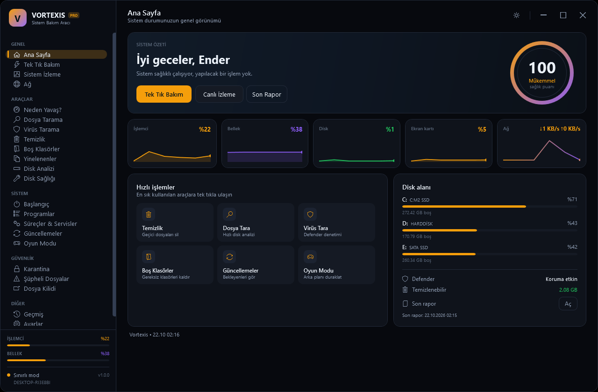
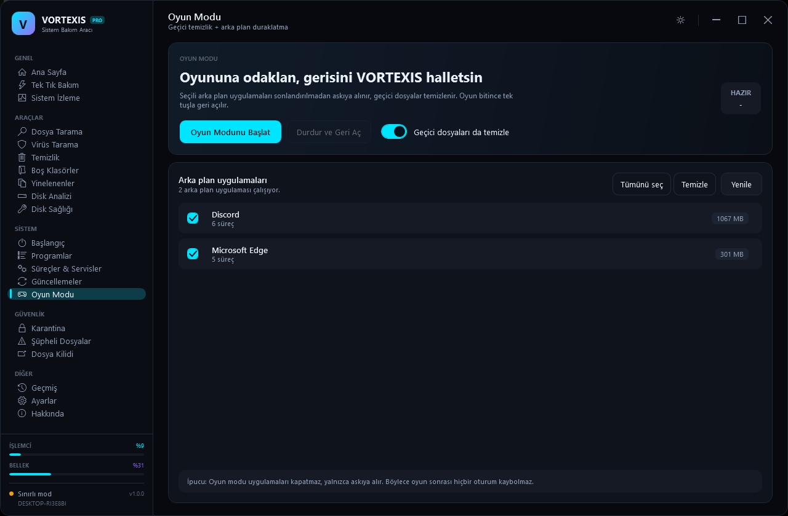

Tek tık bakım
Geçici dosyalar, bozuk kayıtlar, gereksiz başlangıç öğeleri ve eski güncelleme kalıntılarını güvenle temizleyin. Hızlı, dengeli veya derin profil seçin.

Vortexis; bakım, canlı izleme, hız testi ve güvenlik kontrollerini tek bir sade arayüzde birleştirir. Tek EXE, yerel hesap ve bulut zorunluluğu olmadan.

Vortexis, Windows'un dağınık araçlarını tek bir tutarlı arayüzde toplar. Her modül bağımsız çalışır; birlikte kullanıldığında sistemin tam resmini verir.
Geçici dosyalar, bozuk kayıtlar, gereksiz başlangıç öğeleri ve eski güncelleme kalıntılarını güvenle temizleyin. Hızlı, dengeli veya derin profil seçin.
CPU, RAM, disk, sıcaklık ve ağ trafiğini tek ekranda görün. Anomalileri fark edin, darboğazları erkenden yakalayın.

İndirme, yükleme, gecikme ve jitter değerlerini saniyeler içinde ölçün.
Defender durumu, şüpheli dosyalar ve karantina kayıtlarını tek yerden denetleyin.
Büyük dosyaları, yinelenenleri ve boş klasörleri bulun; alanı bilinçli kullanın.
Oyun sırasında arka plan süreçlerini ve bildirimleri duraklatın. Kare düşüşlerini azaltın, odağınızı koruyun.

Hesabınız ve ayarlarınız yerelde kalır. Bulut zorunluluğu yok; giriş kayıtları varsayılan olarak kapalı ve erişimi kısıtlı.
Her ekran, tek bir işi net biçimde yapmak için tasarlandı. Sekmeler arasında gezinin; gerçek uygulama arayüzünü inceleyin.
Gerçek uygulama arayüzü · Vortexis 1.0
Sıcaklık, disk ve bellek metrikleri

İndirme, yükleme, gecikme ve jitter

Şüpheli dosyalar ve karantina kayıtları
Hash, URL veya dosya adıyla hızlı bir ön inceleme başlatın. 24 güvenlik motorunun sinyallerini, topluluk verilerini ve risk skorunu tek ekranda görün.
Gerçek dosya analizi için Vortexis masaüstü uygulamasını kullanın. Web tarayıcısı simüle edilmiş sonuç üretir.
Vortexis'i günlük iş akışında kullanan erken erişim kullanıcılarından birkaç not.
“Tek tık bakım, temizlik rutinimi dakikalardan saniyelere indirdi. Hangi işlemin yapıldığını görmek güven veriyor.”
“Sıcaklık ve disk metriklerini aynı ekranda görmek büyük kolaylık. Arayüz gerçekten sakin ve okunabilir.”
“Kurumsal makinelerde tek EXE ile dağıtım yapmak çok pratik. Yerel hesap yaklaşımı da işimizi kolaylaştırdı.”
Tüm masaüstü özellikleri şu an ücretsiz. Pro ve Kurumsal planlar geliştirme aşamasında; erken erişim listesine katılabilirsiniz.
Günlük bakım ve izleme için ihtiyacınız olan her şey.
Otomasyon ve çoklu cihaz yönetimi isteyenler için.
Merkezi dağıtım ve raporlama gerektiren ekipler için.
Fiyatlar ve plan kapsamı geliştirme sürecinde değişebilir. Şu an ödeme alınmamaktadır.